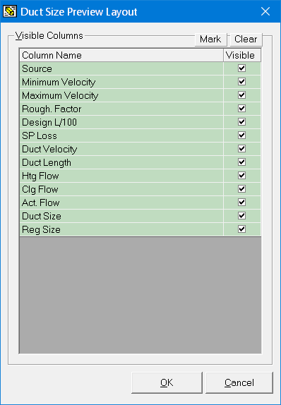

Duct Size Preview Layout (Duct Size Preview Window) |
  
|
Duct Size Preview Layout (Duct Size Preview Window) |
|
Icon: . Keyboard Shortcut: None
To open the Duct Size Preview Layout dialog, shown below, click the Layout button in the Duct Size Preview window's toolbar.

Mark, Clear: Checks or unchecks all the boxes in the list.
Visible Checkboxes: Determines whether or not the indicated column will be visible on the Duct Size Preview window. An explanation of each column is listed below:
·Source: The source of the duct sizing data. Can be any of the following:
Built-In: |
Indicates the data comes from the built-in duct sizing that happens automatically from the rooms you have entered. By default, Rhvac automatically calculates the duct size of the main trunk of each system and the runouts in each room. Used if you do not also enter data for the same runouts on either the Manual D Duct Sizer window or with graphic Manual D Ductsize. Black text is used for the duct or room name. |
TMDD: |
Indicates the data comes from one or more ducts you entered on the Tabular Manual D Ductsize window. Green text is used for the duct or room name. |
MDD: |
Indicates the data comes from one or more ducts you drew using the graphic Manual D Ductsize ducts on the Drawing Board window. Blue text is used for the duct or room name. |
For room rows, the following columns may contain data for multiple ducts. For example, if you drew two runout ducts in a room with graphic Manual D Ductsize where one had a size of 8 inches in diameter and the other with 9 inches in diameter the Duct Size column would say, "8,9." Multiple values in the other columns would be stacked
·Minimum Velocity: The value you entered as a minimum allowed velocity for the duct.
·Maximum Velocity: The value you entered as a maximum allowed velocity for the duct.
·Rough. Factor: The roughness factor you entered for the inside of the duct.
·Design L/100: The design loss per 100 ft. (or 100 meters) you requested for the duct.
·Actual L/100: The actual loss per 100 ft. (or 100 meters) calculated for the duct at its actual size.
·SP Loss: The calculated total static pressure loss that occurs through the duct. For ducts entered with graphic Manual D Ductsize, includes the loss from fittings. Value is blank if the source of the data is the Built-In duct sizing.
·Duct Velocity: The calculated airflow velocity in feet per minute (or meters per second).
·Duct Length: The length of the duct. Value is blank if the source of the data is the Built-In duct sizing.
·Htg Flow: The calculated total heating airflow for either the entire room (for rows in the Supply Runouts section) or for an individual duct (for all other rows). If this value equals the actual airflow the cell will be shown with a light blue highlight.
·Clg Flow: The calculated total cooling airflow for either the entire room (for rows in the Supply Runouts section) or for an individual duct (for all other rows) If this value equals the actual airflow the cell will be shown with a light blue highlight.
·Act. Flow: The actual airflow (for either the entire room or one duct, as indicated above) used in calculating the duct size.
·Duct Size: The calculated duct size.
·Reg Size: The width and height of the register, if the duct is a runout.
OK Button: Applies your changes and closes this dialog.
Cancel Button: Closes this dialog without applying your changes.